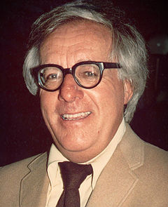

Ray Bradbury nació el 22 de agosto de 1920 en Waukegan, Illinois, hijo de Leonard Spaulding Bradbury y de Esther Moberg. Su familia se estableció en Los Ángeles en 1934. Bradbury fue un ávido lector en su juventud además de un escritor aficionado. No pudo asistir a la universidad por razones económicas. Para ganarse la vida, comenzó a vender periódicos. Posteriormente, se propuso formarse de manera autodidacta a través de libros, comenzando a realizar sus primeros cuentos. Sus trabajos iniciales los vendió a revistas, a comienzos del año 1940, continuó su producción hasta su fallecimiento. También trabajó como argumentista y guionista en numerosas películas y series de televisión, colaboró con John Huston en la adaptación de Moby Dick para la película. En 1947, se casó con Marguerite McClure (1922–2003), con quien tuvo cuatro hijos. Nunca obtuvo una licencia de automovilista. Murió el 5 de junio de 2012 a la edad de 91 años en Los Ángeles, California. A petición suya, su lápida funeraria, en el Cementerio Westwood Village Memorial Park, lleva el epitafio: “Autor de Fahrenheit 451”. Existe un asteroide llamado (9766) Bradbury en su honor.
Esta colección de relatos recoge la crónica de la colonización de Marte por parte de una humanidad que huye de un mundo al borde de la destrucción. Los colonos llevan consigo sus deseos más íntimos y el sueño de reproducir en el Planeta Rojo una civilización de perritos calientes, cómodos sofás y limonada en el porche al atardecer. Pero su equipaje incluye también los miedos ancestrales, que se traducen en odio a lo diferente, y las enfermedades que diezmarán a los marcianos. Conforme a su concepción de lo que debe ser la ciencia ficción, Bradbury se traslada al futuro para iluminar el presente y explorar la naturaleza humana. Escritas en la década de los cuarenta, estas deslumbrantes e intensas historias constituyen un canto contra el racismo, la guerra y la censura, destilando nostalgia e idealismo
“El verano del cohete – enero de 1999” Habla de la primera expedición del cohete a Marte, y de cómo el invierno se hace verano por la ola de calor emitida por el cohete.
“Ylla-febrero de 1999” Ocurre en Marte donde una marciana, llamada Ylla, sueña con la llegada de unos astronautas. Su esposo dice que ella está loca y se pone celoso de los astronautas, finalmente el esposo mata a los astronautas y hace de cuenta que no pasó nada frente a su esposa. “Los hombres de la tierra-agosto de 1999” Esta historia cuenta la crónica de cuatro hombres que llegaron a Marte (la segunda expedición) en busca de unos compañeros que habían desaparecido. Cuando ellos hablan con los marcianos estos creen que están locos, entonces los envían a un loquero. Horas después los atendió un hombre que quería matarlos para terminar con su sufrimiento, él decía que todo lo que los astronautas contaban y el cohete que estaba en Marte era producto de su imaginación, al matarlos y al ver que el cohete no desapareció el hombre se mató a él mismo pesando que él estaba loco.
“El contribuyente – Marzo del 2000” Un hombre quería ir a Marte para escapar de las guerras atómicas que se desarrollarían en la Tierra. Cuando el hombre intentó hablar con los astronautas para que lo dejaran ir con ellos estos se burlaron de él y subieron al cohete
“La tercera expedición-abril del 2000” Esta historia trata de la llegada de la tercera expedición a Marte. Al llegar los astronautas se encontraron que el pueblo era igual que a un típico pueblo americano de la década del 20, en el pueblo los astronautas se ven a sus seres queridos ,ya fallecidos, e interactúan con ellos. La tripulación acepta este hecho mágico y se separa para ver a sus familiares. A la mañana siguiente aparecen todos los astronautas muertos.
“aunque sigua brillando la luna-Junio 2001” Llega la cuarta expedición a Marte, los astronautas descubre que todos los marcianos habían muerto por causa de la varicela (traída de las expediciones anteriores). Uno de los astronautas, llamado Spender, se separa del grupo y vuelve un largo tiempo después queriendo matar a sus compañeros, ya que él decía que los humanos destruirían Marte, todas sus construcciones y cultura. El capital logra asesinar a Spender aunque este ya había matado a cinco de sus compañeros.
“Los colonos-Agosto del 2001” Se trata de la llegada y el asentamiento de los humanos en Marte.
“La mañana verde-diciembre del 2001” Se trata de un hombre, llamado Benjamín Driscoll, que se propone plantar árboles en Marte para que los humanos pudieran respirar mejor, ya que no todos aguantaban el aire marciano. Benjamín planta miles de árboles y a la mañana siguiente, luego de la lluvia, los arboles habían crecido inmensamente.
“Las langostas-Febrero del 2002” Habla de la llegada de los hombres a Marte desde una perspectiva marciana, de cómo en seis meses surgieron doce pueblos y de cómo llegaban los hombre al planea rojo.
“Encuentro nocturno-Agosto del 2002” Habla de un hombre que se encuentra con un marciano. El marciano veía todos los pueblos de Marte en buen estado todos bellos y radiantes (antes de la llegada de los humanos) y decía que iba a una fiesta en un pueblo vecino, en cambio el hombre veía las ruinas de todos esos pueblos y decía que todos los marcianos habían muerto, solo habían quedado vivos unos pocos. Luego de una discusión para ver quien tenía razón, ellos deciden irse cada uno por su lado y hacer como si habían tenido un sueño.
Intermedio-Febrero del 2003” Este relato habla de la construcción de ciudades en Marte y de que todos los materiales necesarios para ello eran traídos desde la Tierra.
“Los músicos-Abril del 2003” Es esta historia se muestra a un grupo de niños jugando que desobedecen a sus madres entrando en una vieja ciudad marciana abandonada, en ella los niños juegan con los cadáveres de los marcianos ya muertos. Al día siguiente la ciudad es quemada y destruida por los bomberos
“Noche de verano-Agosto de 1999 “ Este relato cuenta la historia de cómo los marcianos empiezan a cantar canciones humanas, que ellos desconocían.
“Un camino a través del aire-Junio del 2003” Cuenta la historia de cómo los negros emigran a Marte, buscando una vida mejor. Tecce intenta detenerlos de cualquier manera, primero no deja ir a Belter, un negro, ya que este le debía 50 dólares, el conflicto se soluciona gracias a la colaboración de otras personas que le dan dinero para pagar su endeudamiento. Además tampoco deja ir a Silly, un empleado de él, porque Tecce tenía un contrato que él había firmado, finalmente un blanco toma el lugar de Silly y su patrón no tuvo de otra que dejarlo ir a Marte con sus amigos.
“La elección de los nombres-2004-2005” Cuenta la historia de cómo al llegar los humanos se les fueron cambiando los nombres a las montañas, ciudades, ríos, etcétera los cuales ya tenían nombres marcianos.
“Usher II-Abril del 2005” Un hombre se retira a Marte y construye una mansión inspirada en la “casa Usher”, en un paisaje muerto con murciélagos y vampiros mecánicos. Cuando los inspectores de Climas Morales van a visitarla le dicen que debía quemarla, ya que estaba prohibidas todas las cosas que hacían referencia a los fantasmas. Finalmente el hombre mata al inspector y luego realiza una fiesta con otros inspectores y gente perteneciente a Climas Morales donde también los mata a todos. Luego el hombre destruye la casa y huye.